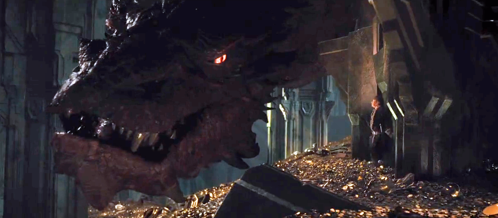

Хоббит: Нежданное Путешествие
Я, как поклоник Толкина и Питера Джексона, сразу понял про новую кинотрилогию «Хоббита» — фильм будет не слабее «Властелина Колец».
Бильбо Беггинс из Бэк Энда жил себе добропорядочной жизнью, не ожидая никаких "нежданных приключений", как вдруг к нему приходит волшебник по имени Гэндальф и заявляет, что он становится четырнадцатым участником похода для кражи Аркенстона из горы Эребор, которая находится в лапах огнедыщащего дракона Смауга. Так ещё и орки гонятся за братством, по приказу Саурона и Азога Осквернителя.
К счастью, я прочитал все книги: от «Властелина Колец», до «Хоббита» и я со спокойной душой мог не опасаться спойлеров и прочей ерунды в последующих фильмах. Но не тут-то было, вышел второй фильм, который предподнёс мне плохие и хорошие впечатления.
Хоббит: Пустошь Смауга
Когда я впервые просмотрел вторую часть, я нейтрально отнёсся к дополнениям ПиДжея: простой эльфийке Тауриель, в которую влюбился Леголас сын Трандуила и вторая, менее понятная вещь — любовь гнома и Тауриель. Я это простил Питеру, даже наоборот, было некое разнообразие, что идёт в плюс к фильму.
ТауриельОрки не отстают за гномьей шайкой и всячески пытаются им помешать добраться до горы. В первый раз прикончить гномов им помешали орлы.
Голос и мимику Смаугу подарил актёр Бенедикт Камбербетч, который отлично справился с этой ролью. И вообще, Смауг в фильме получился очень круто, смотря на него в фильме веришь в то, что он так огромен по сравнению с "ворохоббитом".
 Неплохо, а?Сокровищница Эребора по настоящему завораживает. Каждая монетка отсвечивает и украшает огромный зал Эребора, словно там течёт река, а под ней — дракон.
Во время съемок фильма было использовано огромное количество золотых монет и прочего реквизита.Битва пяти армий.
Как только начинается фильм, Питер Джексон буквально сразу же посылает вас в бой. В бой за речной город, на который напал Золотой Смауг. Вскоре Бард убивает дракона из специальной стрелы и жители речного города признают в нём лидера. Тем временем, гномы отвоевав гору, начинают обустраивать (завалить главные ворота, к примеру) её по приказу Торина, который, кстати, начинает немного сходить с ума от золота.
 Битва и в прямь очень эпичная. Никого не оставит без впечатлений.
Битва и в прямь очень эпичная. Никого не оставит без впечатлений.
А ПиДжей и не собирался давать вам передышку! Весть о том, что Смауг убит разнеслась по миру быстрее раскабельских кроликов. Трандуил — владыка лесных эльфов Лихолесья, желает заполучить некоторые сокровища, которые принаджелат его народу. А Бард — требует от Торина возмещение убытков, за сожжённый город и вообще, они совершили сделку, ещё до того, как отправиться прямиком к горе. Но Торин, опьянёный золотом, отказал всем. Из всего этого могла начаться война, если бы не одно но: орки тоже хотят заполучить гору. Началась битва за Эребор.
Всё рассказывать, конечно, я не намерен — фильм нужно просмотреть, обязательно. Экшен там на каждому шагу, там не осталось ни шуткам (кроме Альфреда, трусливого, но чертовски смешного заместителя бургомистра), ни разговорам.
Питер Джексон снял две кинотрилогии, которые я полюбил и врядли разлюблю.